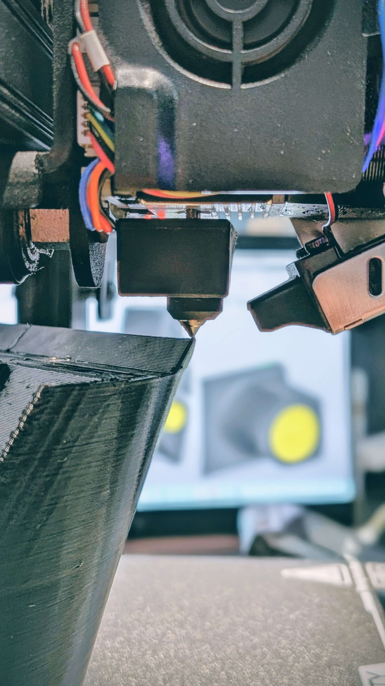
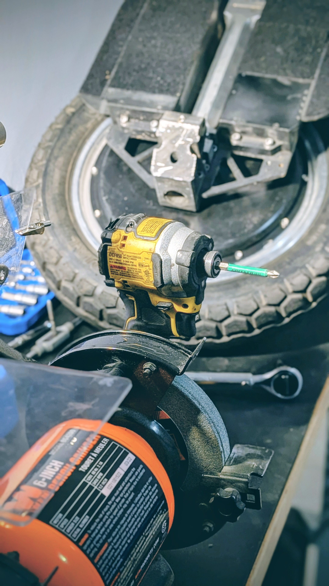
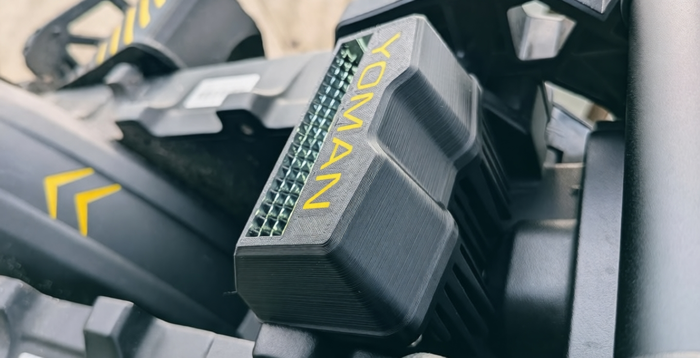
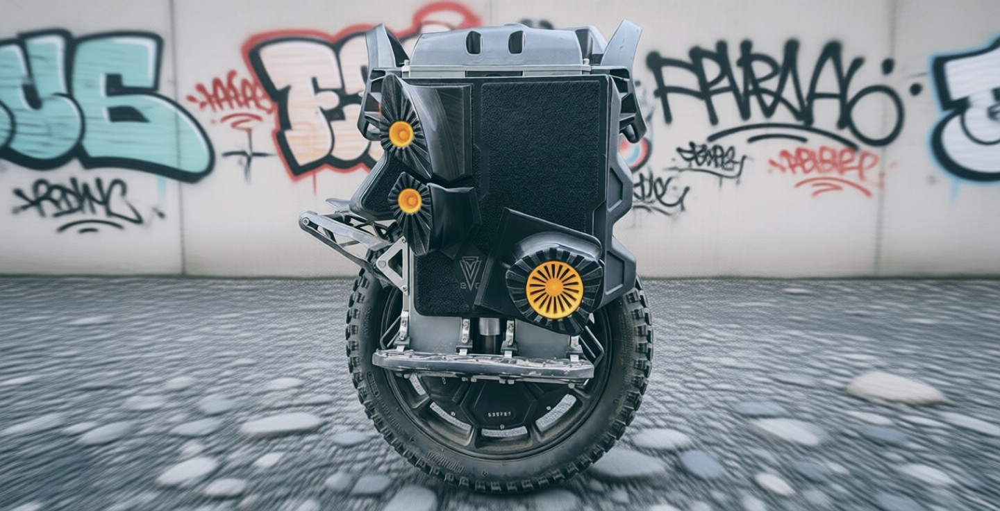
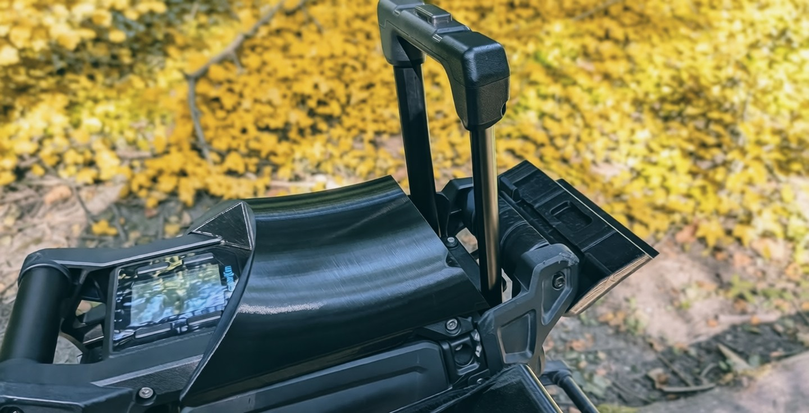
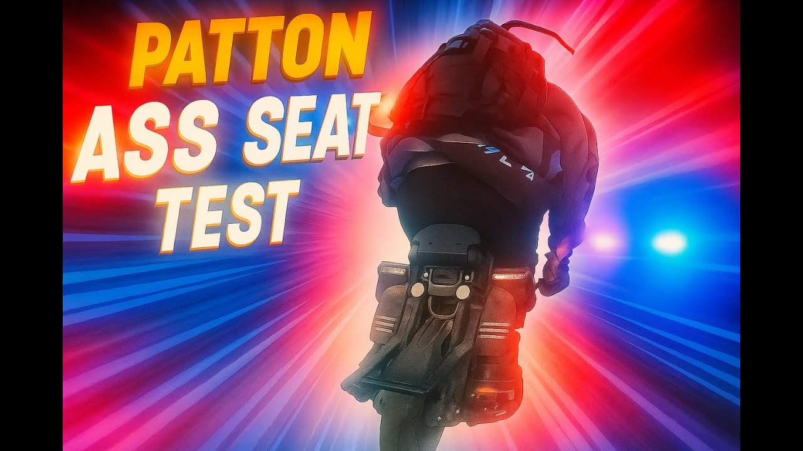
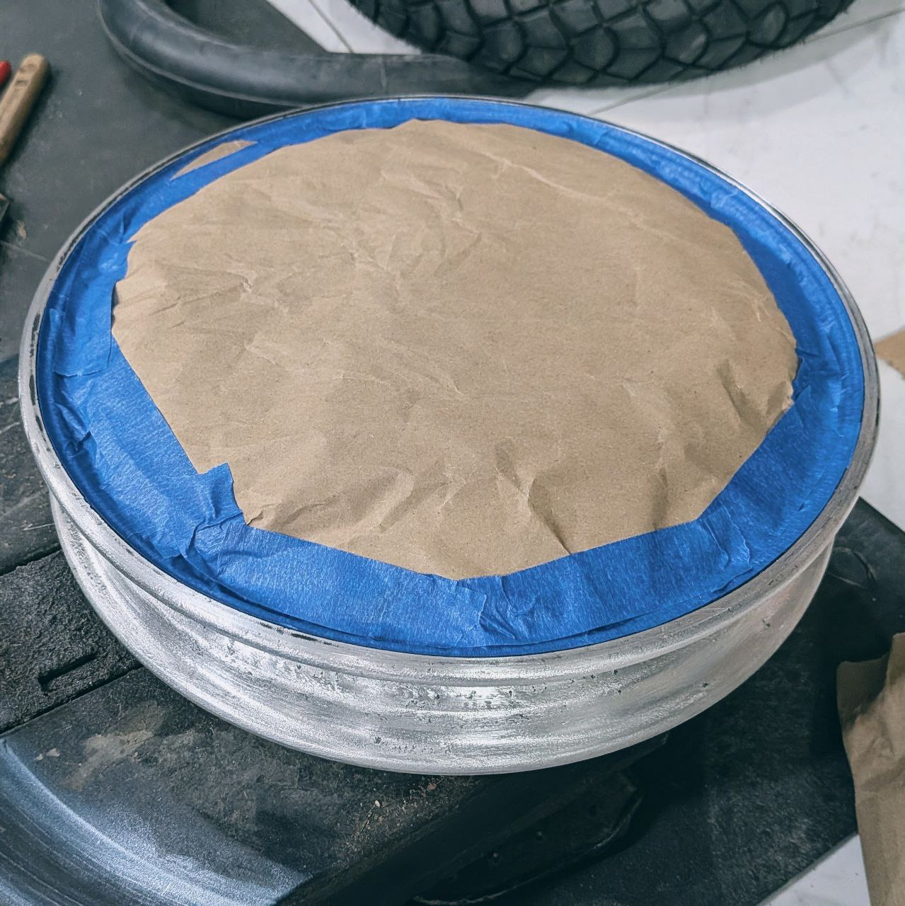
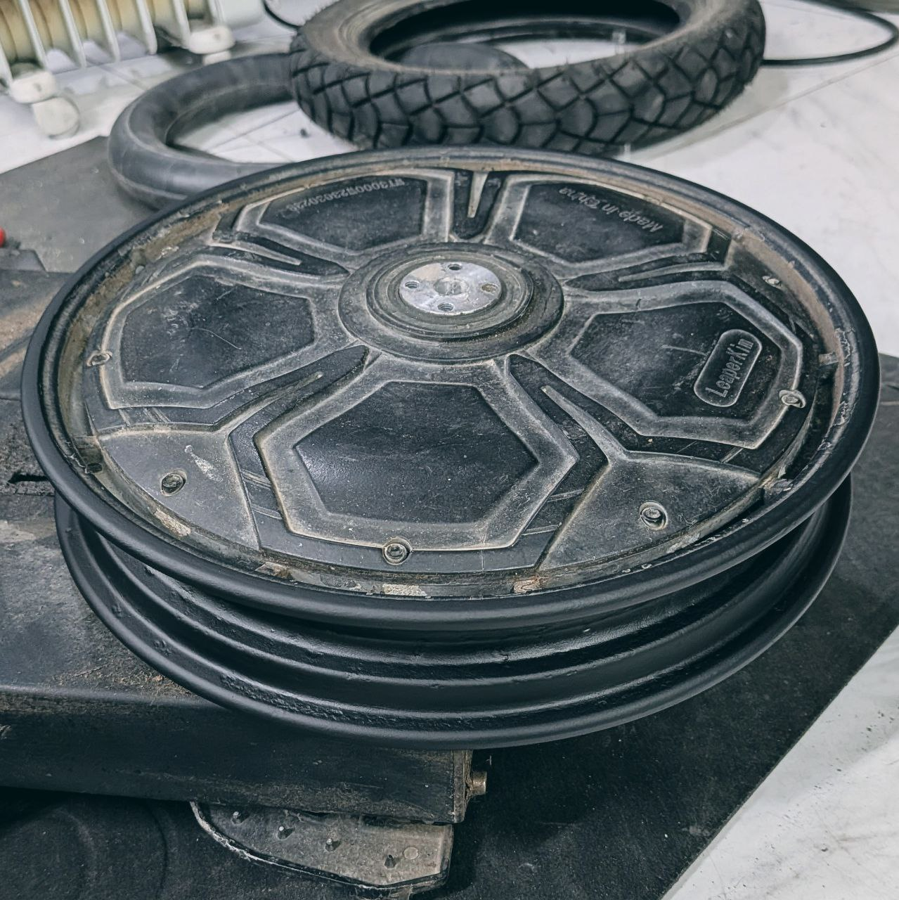

PROJECTS

SERVICE
PROJECTS

Leaperkim Headlight Cutoff

JetKnobs Power Pads

Patton-S Seat
Ride test and install guide video:

Custom Project
Got a cool idea for your wheel, but can't find the time to learn CAD and 3D printing? Let me know what you have in mind, and we'll make it happen.
Propose Your IdeaSERVICE





Hi, I'm a technician from the now-dead eevee's Service.
Until I find a proper job, I repair electric unicycles in my basement kitchen — yes, literally — where I have all the tools and diagnostic equipment.
Tire replacement, bearing replacement, battery balancing — basically everything we used to do in the service can now be done at my place.
The bonus is a lower service price.
I don't have a parts stock yet, so after diagnostics we'll order the required parts online together.
Tell me why you're walking instead of riding right now — I'm sure we can figure something out.
© 2026 YOMAN WORKS. All rights reserved.